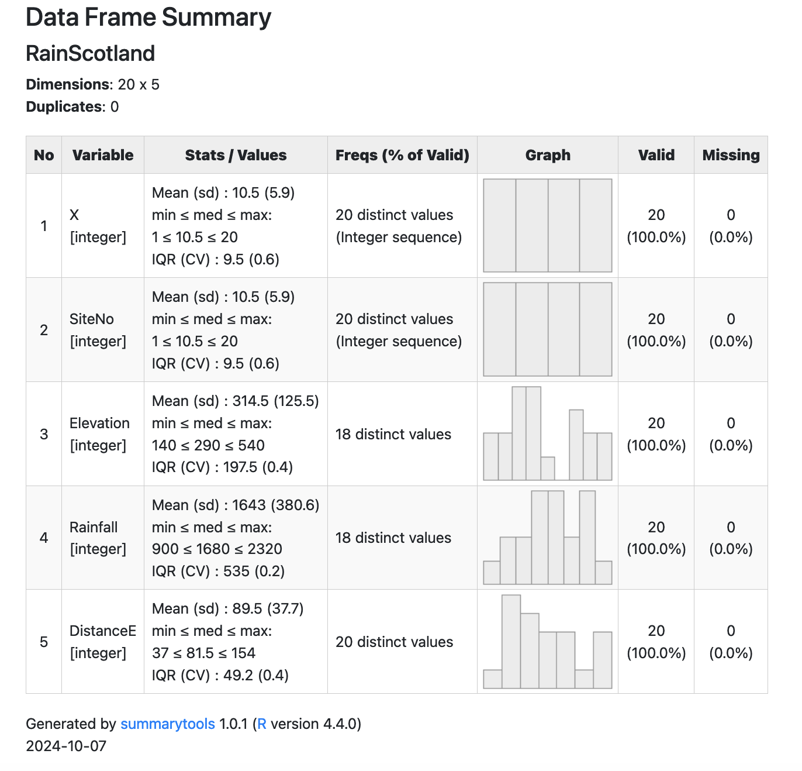
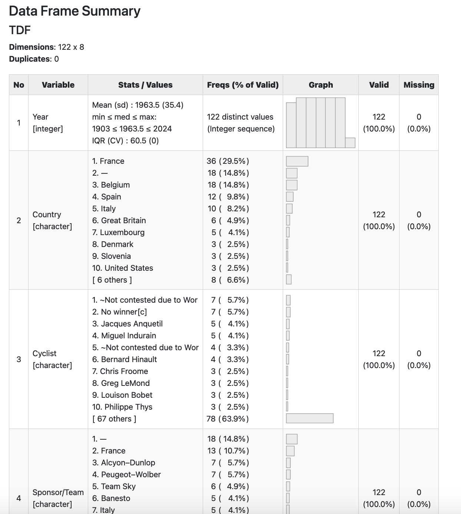

RainScotland<-read.csv("data/Ferguson/RainScotland.csv")
summarytools::dfSummary(RainScotland)
#> Data Frame Summary
#> RainScotland
#> Dimensions: 20 x 5
#> Duplicates: 0
#>
#> ----------------------------------------------------------------------------------------------------------
#> No Variable Stats / Values Freqs (% of Valid) Graph Valid Missing
#> ---- ----------- --------------------------- -------------------- ------------------- ---------- ---------
#> 1 X Mean (sd) : 10.5 (5.9) 20 distinct values : : : : 20 0
#> [integer] min < med < max: (Integer sequence) : : : : (100.0%) (0.0%)
#> 1 < 10.5 < 20 : : : :
#> IQR (CV) : 9.5 (0.6) : : : :
#> : : : :
#>
#> 2 SiteNo Mean (sd) : 10.5 (5.9) 20 distinct values : : : : 20 0
#> [integer] min < med < max: (Integer sequence) : : : : (100.0%) (0.0%)
#> 1 < 10.5 < 20 : : : :
#> IQR (CV) : 9.5 (0.6) : : : :
#> : : : :
#>
#> 3 Elevation Mean (sd) : 314.5 (125.5) 18 distinct values : : 20 0
#> [integer] min < med < max: : : : (100.0%) (0.0%)
#> 140 < 290 < 540 . . : : : . .
#> IQR (CV) : 197.5 (0.4) : : : : : : :
#> : : : : : : : :
#>
#> 4 Rainfall Mean (sd) : 1643 (380.6) 18 distinct values : : : 20 0
#> [integer] min < med < max: : : : (100.0%) (0.0%)
#> 900 < 1680 < 2320 . . : : . :
#> IQR (CV) : 535 (0.2) : : : : : :
#> : : : : : : : :
#>
#> 5 DistanceE Mean (sd) : 89.5 (37.7) 20 distinct values : 20 0
#> [integer] min < med < max: : : (100.0%) (0.0%)
#> 37 < 81.5 < 154 : : : : :
#> IQR (CV) : 49.2 (0.4) : : : : :
#> : : : : : : :
#> ----------------------------------------------------------------------------------------------------------33 Summary tables
You often find yourself willing to output a summary table in a way others can easily look at it with some visual comfort or for publication.
This applies to descriptive statistics or the output of models.
There are no standard way of doing this in R, but many packages to do so. I suppose a decade ago most Latex users will tend to use stargazer as a way to get a tex base to be included somewhere else. Now, especially givent the take off or markdown style reporting and integration of notebooks and R (just like in R Studio), the choice is more open.
Here is an example of using summarytools and modelsummary to quickly describe an entire dataset. We invite you to look into these packages for fine tuning, but also to be very careful of the output. No matter how easy the outcome is to be produced you always need to think of the relevance of any metric or graph produced over an entire table.
33.1 Descriptive statistics with summarytools
Take the RainScotland dataset as a first example and use the dfSummary() function that provides a rather comprehensive set of statistics for entire dataframes:
An nice feature is that it can generate its own view (beware: view not View(), as an html file for display in any browser:
summarytools::view(summarytools::dfSummary(RainScotland), file = "output/RainScotland.html")
If we would a more complex dataset (including factors) such as the wikipedia table of the Tour de France winners, we would have:
TDF<-readRDS("data/TourDeFrance/LeTour_df.rds")
summarytools::dfSummary(TDF)
#> Data Frame Summary
#> TDF
#> Dimensions: 122 x 8
#> Duplicates: 0
#>
#> ----------------------------------------------------------------------------------------------------------------
#> No Variable Stats / Values Freqs (% of Valid) Graph Valid Missing
#> ---- -------------- ------------------------------ --------------------- ------------------ ---------- ---------
#> 1 Year Mean (sd) : 1963.5 (35.4) 122 distinct values . : : : : : 122 0
#> [integer] min < med < max: (Integer sequence) : : : : : : (100.0%) (0.0%)
#> 1903 < 1963.5 < 2024 : : : : : :
#> IQR (CV) : 60.5 (0) : : : : : :
#> : : : : : : :
#>
#> 2 Country 1. France 36 (29.5%) IIIII 122 0
#> [character] 2. — 18 (14.8%) II (100.0%) (0.0%)
#> 3. Belgium 18 (14.8%) II
#> 4. Spain 12 ( 9.8%) I
#> 5. Italy 10 ( 8.2%) I
#> 6. Great Britain 6 ( 4.9%)
#> 7. Luxembourg 5 ( 4.1%)
#> 8. Denmark 3 ( 2.5%)
#> 9. Slovenia 3 ( 2.5%)
#> 10. United States 3 ( 2.5%)
#> [ 6 others ] 8 ( 6.6%) I
#>
#> 3 Cyclist 1. ~Not contested due to Wor 7 ( 5.7%) I 122 0
#> [character] 2. No winner[c] 7 ( 5.7%) I (100.0%) (0.0%)
#> 3. Jacques Anquetil 5 ( 4.1%)
#> 4. Miguel Indurain 5 ( 4.1%)
#> 5. ~Not contested due to Wor 4 ( 3.3%)
#> 6. Bernard Hinault 4 ( 3.3%)
#> 7. Chris Froome 3 ( 2.5%)
#> 8. Greg LeMond 3 ( 2.5%)
#> 9. Louison Bobet 3 ( 2.5%)
#> 10. Philippe Thys 3 ( 2.5%)
#> [ 67 others ] 78 (63.9%) IIIIIIIIIIII
#>
#> 4 Sponsor/Team 1. — 18 (14.8%) II 122 0
#> [character] 2. France 13 (10.7%) II (100.0%) (0.0%)
#> 3. Alcyon–Dunlop 7 ( 5.7%) I
#> 4. Peugeot–Wolber 7 ( 5.7%) I
#> 5. Team Sky 6 ( 4.9%)
#> 6. Banesto 5 ( 4.1%)
#> 7. Italy 5 ( 4.1%)
#> 8. Automoto–Hutchinson 3 ( 2.5%)
#> 9. Belgium 3 ( 2.5%)
#> 10. La Sportive 3 ( 2.5%)
#> [ 40 others ] 52 (42.6%) IIIIIIII
#>
#> 5 Distance 1. — 11 ( 9.0%) I 122 0
#> [character] 2. 2,428 km (1,509 mi) 2 ( 1.6%) (100.0%) (0.0%)
#> 3. 3,765 km (2,339 mi) 2 ( 1.6%)
#> 4. 4,498 km (2,795 mi) 2 ( 1.6%)
#> 5. 2,994 km (1,860 mi) 1 ( 0.8%)
#> 6. 3,278 km (2,037 mi) 1 ( 0.8%)
#> 7. 3,285 km (2,041 mi) 1 ( 0.8%)
#> 8. 3,286 km (2,042 mi) 1 ( 0.8%)
#> 9. 3,328 km (2,068 mi) 1 ( 0.8%)
#> 10. 3,349 km (2,081 mi) 1 ( 0.8%)
#> [ 99 others ] 99 (81.1%) IIIIIIIIIIIIIIII
#>
#> 6 Time/Points 1. — 18 (14.8%) II 122 0
#> [character] 2. 100h 30′ 35″ 1 ( 0.8%) (100.0%) (0.0%)
#> 3. 100h 49′ 30″ 1 ( 0.8%)
#> 4. 101h 01′ 20″ 1 ( 0.8%)
#> 5. 103h 06′ 50″ 1 ( 0.8%)
#> 6. 103h 38′ 38″ 1 ( 0.8%)
#> 7. 105h 07′ 52″ 1 ( 0.8%)
#> 8. 108h 17′ 18″ 1 ( 0.8%)
#> 9. 108h 18′ 00″ 1 ( 0.8%)
#> 10. 109h 19′ 14″ 1 ( 0.8%)
#> [ 95 others ] 95 (77.9%) IIIIIIIIIIIIIII
#>
#> 7 Margin 1. — 18 (14.8%) II 122 0
#> [character] 2. + 3′ 10″ 2 ( 1.6%) (100.0%) (0.0%)
#> 3. + 3′ 21″ 2 ( 1.6%)
#> 4. + 4′ 01″ 2 ( 1.6%)
#> 5. + 4′ 35″ 2 ( 1.6%)
#> 6. + 4′ 59″ 2 ( 1.6%)
#> 7. + 1′ 07″ 1 ( 0.8%)
#> 8. + 1′ 11″ 1 ( 0.8%)
#> 9. + 1′ 12″ 1 ( 0.8%)
#> 10. + 1′ 22″ 1 ( 0.8%)
#> [ 90 others ] 90 (73.8%) IIIIIIIIIIIIII
#>
#> 8 Stage wins 1. — 18 (14.8%) II 122 0
#> [character] 2. 0 8 ( 6.6%) I (100.0%) (0.0%)
#> 3. 1 20 (16.4%) III
#> 4. 2 27 (22.1%) IIII
#> 5. 3 19 (15.6%) III
#> 6. 4 12 ( 9.8%) I
#> 7. 5 8 ( 6.6%) I
#> 8. 6 6 ( 4.9%)
#> 9. 7 2 ( 1.6%)
#> 10. 8 2 ( 1.6%)
#> ----------------------------------------------------------------------------------------------------------------summarytools::view(summarytools::dfSummary(TDF), file = "output/LeTour.html")
A less visual but even more complete set (including range and indicators of the shape of the distributions) can be obtained with the descr()function.
summarytools::descr(RainScotland)
#> Descriptive Statistics
#> RainScotland
#> N: 20
#>
#> DistanceE Elevation Rainfall SiteNo X
#> ----------------- ----------- ----------- ---------- -------- --------
#> Mean 89.50 314.50 1643.00 10.50 10.50
#> Std.Dev 37.74 125.51 380.62 5.92 5.92
#> Min 37.00 140.00 900.00 1.00 1.00
#> Q1 55.50 220.00 1335.00 5.50 5.50
#> Median 81.50 290.00 1680.00 10.50 10.50
#> Q3 109.00 425.00 1955.00 15.50 15.50
#> Max 154.00 540.00 2320.00 20.00 20.00
#> MAD 38.55 155.67 459.61 7.41 7.41
#> IQR 49.25 197.50 535.00 9.50 9.50
#> CV 0.42 0.40 0.23 0.56 0.56
#> Skewness 0.40 0.33 -0.09 0.00 0.00
#> SE.Skewness 0.51 0.51 0.51 0.51 0.51
#> Kurtosis -1.13 -1.30 -1.05 -1.38 -1.38
#> N.Valid 20.00 20.00 20.00 20.00 20.00
#> Pct.Valid 100.00 100.00 100.00 100.00 100.00In the case we apply it to the Tour de France, only the year is available as a numeric, which is not quite interesting because there is only one Tour per year, thus providing basically no useful information.
summarytools::descr(TDF)
#> Non-numerical variable(s) ignored: Country, Cyclist, Sponsor/Team, Distance, Time/Points, Margin, Stage wins
#> Descriptive Statistics
#> TDF$Year
#> N: 122
#>
#> Year
#> ----------------- ---------
#> Mean 1963.50
#> Std.Dev 35.36
#> Min 1903.00
#> Q1 1933.00
#> Median 1963.50
#> Q3 1994.00
#> Max 2024.00
#> MAD 45.22
#> IQR 60.50
#> CV 0.02
#> Skewness 0.00
#> SE.Skewness 0.22
#> Kurtosis -1.23
#> N.Valid 122.00
#> Pct.Valid 100.00The specific function freq() is rather to be used here. Given most variables are categorical, we are interested in counts and percentages:
summarytools::freq(TDF)
#> Variable(s) ignored: Year
#> Frequencies
#> TDF$Country
#> Type: Character
#>
#> Freq % Valid % Valid Cum. % Total % Total Cum.
#> ------------------- ------ --------- -------------- --------- --------------
#> — 18 14.75 14.75 14.75 14.75
#> Australia 1 0.82 15.57 0.82 15.57
#> Belgium 18 14.75 30.33 14.75 30.33
#> Colombia 1 0.82 31.15 0.82 31.15
#> Denmark 3 2.46 33.61 2.46 33.61
#> France 36 29.51 63.11 29.51 63.11
#> Germany 1 0.82 63.93 0.82 63.93
#> Great Britain 6 4.92 68.85 4.92 68.85
#> Ireland 1 0.82 69.67 0.82 69.67
#> Italy 10 8.20 77.87 8.20 77.87
#> Luxembourg 5 4.10 81.97 4.10 81.97
#> Netherlands 2 1.64 83.61 1.64 83.61
#> Slovenia 3 2.46 86.07 2.46 86.07
#> Spain 12 9.84 95.90 9.84 95.90
#> Switzerland 2 1.64 97.54 1.64 97.54
#> United States 3 2.46 100.00 2.46 100.00
#> <NA> 0 0.00 100.00
#> Total 122 100.00 100.00 100.00 100.00
#>
#> TDF$Cyclist
#> Type: Character
#>
#> Freq % Valid % Valid Cum. % Total % Total Cum.
#> ---------------------------------------- ------ --------- -------------- --------- --------------
#> ~Not contested due to World War I 4 3.28 3.28 3.28 3.28
#> ~Not contested due to World War II 7 5.74 9.02 5.74 9.02
#> Alberto Contador 1 0.82 9.84 0.82 9.84
#> Alberto Contador# 1 0.82 10.66 0.82 10.66
#> André Leducq 2 1.64 12.30 1.64 12.30
#> Andy Schleck#[e] 1 0.82 13.11 0.82 13.11
#> Antonin Magne 2 1.64 14.75 1.64 14.75
#> Bernard Hinault 4 3.28 18.03 3.28 18.03
#> Bernard Hinault† 1 0.82 18.85 0.82 18.85
#> Bernard Thévenet 2 1.64 20.49 1.64 20.49
#> Bjarne Riis[b] 1 0.82 21.31 0.82 21.31
#> Bradley Wiggins 1 0.82 22.13 0.82 22.13
#> Cadel Evans 1 0.82 22.95 0.82 22.95
#> Carlos Sastre 1 0.82 23.77 0.82 23.77
#> Charly Gaul 1 0.82 24.59 0.82 24.59
#> Chris Froome 3 2.46 27.05 2.46 27.05
#> Chris Froome 1 0.82 27.87 0.82 27.87
#> Eddy Merckx 1 0.82 28.69 0.82 28.69
#> Eddy Merckx 1 0.82 29.51 0.82 29.51
#> Eddy Merckx† 2 1.64 31.15 1.64 31.15
#> Eddy Merckx‡ 1 0.82 31.97 0.82 31.97
#> Egan Bernal# 1 0.82 32.79 0.82 32.79
#> Fausto Coppi 2 1.64 34.43 1.64 34.43
#> Federico Bahamontes 1 0.82 35.25 0.82 35.25
#> Felice Gimondi 1 0.82 36.07 0.82 36.07
#> Ferdinand Kübler 1 0.82 36.89 0.82 36.89
#> Firmin Lambot 2 1.64 38.52 1.64 38.52
#> François Faber 1 0.82 39.34 0.82 39.34
#> Gastone Nencini 1 0.82 40.16 0.82 40.16
#> Georges Speicher 1 0.82 40.98 0.82 40.98
#> Geraint Thomas 1 0.82 41.80 0.82 41.80
#> Gino Bartali 2 1.64 43.44 1.64 43.44
#> Greg LeMond 3 2.46 45.90 2.46 45.90
#> Gustave Garrigou 1 0.82 46.72 0.82 46.72
#> Henri Cornet[a] 1 0.82 47.54 0.82 47.54
#> Henri Pélissier 1 0.82 48.36 0.82 48.36
#> Hugo Koblet 1 0.82 49.18 0.82 49.18
#> Jacques Anquetil 5 4.10 53.28 4.10 53.28
#> Jan Janssen 1 0.82 54.10 0.82 54.10
#> Jan Ullrich# 1 0.82 54.92 0.82 54.92
#> Jean Robic 1 0.82 55.74 0.82 55.74
#> Jonas Vingegaard 1 0.82 56.56 0.82 56.56
#> Jonas Vingegaard 1 0.82 57.38 0.82 57.38
#> Joop Zoetemelk 1 0.82 58.20 0.82 58.20
#> Laurent Fignon 1 0.82 59.02 0.82 59.02
#> Laurent Fignon# 1 0.82 59.84 0.82 59.84
#> Léon Scieur 1 0.82 60.66 0.82 60.66
#> Louis Trousselier 1 0.82 61.48 0.82 61.48
#> Louison Bobet 3 2.46 63.93 2.46 63.93
#> Lucien Aimar 1 0.82 64.75 0.82 64.75
#> Lucien Buysse 1 0.82 65.57 0.82 65.57
#> Lucien Petit-Breton 2 1.64 67.21 1.64 67.21
#> Lucien Van Impe 1 0.82 68.03 0.82 68.03
#> Luis Ocaña 1 0.82 68.85 0.82 68.85
#> Marco Pantani 1 0.82 69.67 0.82 69.67
#> Maurice De Waele 1 0.82 70.49 0.82 70.49
#> Maurice Garin 1 0.82 71.31 0.82 71.31
#> Miguel Indurain 5 4.10 75.41 4.10 75.41
#> Nicolas Frantz 2 1.64 77.05 1.64 77.05
#> No winner[c] 7 5.74 82.79 5.74 82.79
#> Octave Lapize 1 0.82 83.61 0.82 83.61
#> Odile Defraye 1 0.82 84.43 0.82 84.43
#> Óscar Pereiro[d] 1 0.82 85.25 0.82 85.25
#> Ottavio Bottecchia 2 1.64 86.89 1.64 86.89
#> Pedro Delgado 1 0.82 87.70 0.82 87.70
#> Philippe Thys 3 2.46 90.16 2.46 90.16
#> René Pottier 1 0.82 90.98 0.82 90.98
#> Roger Lapébie 1 0.82 91.80 0.82 91.80
#> Roger Pingeon 1 0.82 92.62 0.82 92.62
#> Roger Walkowiak 1 0.82 93.44 0.82 93.44
#> Romain Maes 1 0.82 94.26 0.82 94.26
#> Stephen Roche 1 0.82 95.08 0.82 95.08
#> Sylvère Maes 1 0.82 95.90 0.82 95.90
#> Sylvère Maes 1 0.82 96.72 0.82 96.72
#> Tadej Pogačar 1 0.82 97.54 0.82 97.54
#> Tadej Pogačar§ 2 1.64 99.18 1.64 99.18
#> Vincenzo Nibali 1 0.82 100.00 0.82 100.00
#> <NA> 0 0.00 100.00
#> Total 122 100.00 100.00 100.00 100.00
#>
#> TDF$Sponsor/Team
#> Type: Character
#>
#> Freq % Valid % Valid Cum. % Total % Total Cum.
#> --------------------------------------- ------ --------- -------------- --------- --------------
#> — 18 14.75 14.75 14.75 14.75
#> AD Renting–W-Cup–Bottecchia 1 0.82 15.57 0.82 15.57
#> Alcyon–Dunlop 7 5.74 21.31 5.74 21.31
#> Astana 2 1.64 22.95 1.64 22.95
#> Automoto 1 0.82 23.77 0.82 23.77
#> Automoto–Hutchinson 3 2.46 26.23 2.46 26.23
#> Banesto 5 4.10 30.33 4.10 30.33
#> Belgium 3 2.46 32.79 2.46 32.79
#> Bic 1 0.82 33.61 0.82 33.61
#> BMC Racing Team 1 0.82 34.43 0.82 34.43
#> Caisse d'Epargne–Illes Balears 1 0.82 35.25 0.82 35.25
#> Carrera Jeans–Vagabond 1 0.82 36.07 0.82 36.07
#> Conte 1 0.82 36.89 0.82 36.89
#> Discovery Channel 1 0.82 37.70 0.82 37.70
#> Faema 1 0.82 38.52 0.82 38.52
#> Faemino–Faema 1 0.82 39.34 0.82 39.34
#> Ford France–Hutchinson 1 0.82 40.16 0.82 40.16
#> France 13 10.66 50.82 10.66 50.82
#> Gitane–Campagnolo 1 0.82 51.64 0.82 51.64
#> Italy 5 4.10 55.74 4.10 55.74
#> La Française 1 0.82 56.56 0.82 56.56
#> La Sportive 3 2.46 59.02 2.46 59.02
#> La Vie Claire 2 1.64 60.66 1.64 60.66
#> Luxembourg 1 0.82 61.48 0.82 61.48
#> Mercatone Uno–Bianchi 1 0.82 62.30 0.82 62.30
#> Molteni 3 2.46 64.75 2.46 64.75
#> Pelforth–Sauvage–Lejeune 1 0.82 65.57 0.82 65.57
#> Peugeot–BP–Michelin 2 1.64 67.21 1.64 67.21
#> Peugeot–Esso–Michelin 1 0.82 68.03 0.82 68.03
#> Peugeot–Wolber 7 5.74 73.77 5.74 73.77
#> Renault–Elf 2 1.64 75.41 1.64 75.41
#> Renault–Elf–Gitane 2 1.64 77.05 1.64 77.05
#> Renault–Gitane 1 0.82 77.87 0.82 77.87
#> Renault–Gitane–Campagnolo 1 0.82 78.69 0.82 78.69
#> Reynolds 1 0.82 79.51 0.82 79.51
#> Saint-Raphaël–Gitane–Dunlop 1 0.82 80.33 0.82 80.33
#> Saint-Raphaël–Gitane–R. Geminiani 1 0.82 81.15 0.82 81.15
#> Saint-Raphaël–Helyett–Hutchinson 1 0.82 81.97 0.82 81.97
#> Salvarani 1 0.82 82.79 0.82 82.79
#> Spain 1 0.82 83.61 0.82 83.61
#> Switzerland 2 1.64 85.25 1.64 85.25
#> Team CSC 1 0.82 86.07 0.82 86.07
#> Team Ineos 1 0.82 86.89 0.82 86.89
#> Team Jumbo–Visma 2 1.64 88.52 1.64 88.52
#> Team Saxo Bank 1 0.82 89.34 0.82 89.34
#> Team Sky 6 4.92 94.26 4.92 94.26
#> Team Telekom 2 1.64 95.90 1.64 95.90
#> TI–Raleigh–Creda 1 0.82 96.72 0.82 96.72
#> UAE Team Emirates 3 2.46 99.18 2.46 99.18
#> Z–Tomasso 1 0.82 100.00 0.82 100.00
#> <NA> 0 0.00 100.00
#> Total 122 100.00 100.00 100.00 100.00
#>
#> TDF$Distance
#> Type: Character
#>
#> Freq % Valid % Valid Cum. % Total % Total Cum.
#> ----------------------------- ------ --------- -------------- --------- --------------
#> — 11 9.02 9.02 9.02 9.02
#> 2,428 km (1,509 mi) 2 1.64 10.66 1.64 10.66
#> 2,994 km (1,860 mi) 1 0.82 11.48 0.82 11.48
#> 3,278 km (2,037 mi) 1 0.82 12.30 0.82 12.30
#> 3,285 km (2,041 mi) 1 0.82 13.11 0.82 13.11
#> 3,286 km (2,042 mi) 1 0.82 13.93 0.82 13.93
#> 3,328 km (2,068 mi) 1 0.82 14.75 0.82 14.75
#> 3,349 km (2,081 mi) 1 0.82 15.57 0.82 15.57
#> 3,359 km (2,087 mi) 1 0.82 16.39 0.82 16.39
#> 3,360.3 km (2,088.0 mi) 1 0.82 17.21 0.82 17.21
#> 3,366 km (2,092 mi) 1 0.82 18.03 0.82 18.03
#> 3,391 km (2,107 mi) 1 0.82 18.85 0.82 18.85
#> 3,404 km (2,115 mi) 1 0.82 19.67 0.82 19.67
#> 3,406 km (2,116 mi) 1 0.82 20.49 0.82 20.49
#> 3,414.4 km (2,121.6 mi) 1 0.82 21.31 0.82 21.31
#> 3,427 km (2,129 mi) 1 0.82 22.13 0.82 22.13
#> 3,430 km (2,130 mi) 1 0.82 22.95 0.82 22.95
#> 3,458 km (2,149 mi) 1 0.82 23.77 0.82 23.77
#> 3,459 km (2,149 mi) 1 0.82 24.59 0.82 24.59
#> 3,484 km (2,165 mi) 1 0.82 25.41 0.82 25.41
#> 3,496 km (2,172 mi) 1 0.82 26.23 0.82 26.23
#> 3,498 km (2,174 mi) 1 0.82 27.05 0.82 27.05
#> 3,504 km (2,177 mi) 1 0.82 27.87 0.82 27.87
#> 3,507 km (2,179 mi) 1 0.82 28.69 0.82 28.69
#> 3,529 km (2,193 mi) 1 0.82 29.51 0.82 29.51
#> 3,540 km (2,200 mi) 1 0.82 30.33 0.82 30.33
#> 3,559 km (2,211 mi) 1 0.82 31.15 0.82 31.15
#> 3,570 km (2,220 mi) 1 0.82 31.97 0.82 31.97
#> 3,608 km (2,242 mi) 1 0.82 32.79 0.82 32.79
#> 3,635 km (2,259 mi) 1 0.82 33.61 0.82 33.61
#> 3,642 km (2,263 mi) 1 0.82 34.43 0.82 34.43
#> 3,657 km (2,272 mi) 1 0.82 35.25 0.82 35.25
#> 3,660.5 km (2,274.5 mi) 1 0.82 36.07 0.82 36.07
#> 3,662 km (2,275 mi) 1 0.82 36.89 0.82 36.89
#> 3,687 km (2,291 mi) 1 0.82 37.70 0.82 37.70
#> 3,714 km (2,308 mi) 1 0.82 38.52 0.82 38.52
#> 3,753 km (2,332 mi) 1 0.82 39.34 0.82 39.34
#> 3,765 km (2,339 mi) 2 1.64 40.98 1.64 40.98
#> 3,809 km (2,367 mi) 1 0.82 41.80 0.82 41.80
#> 3,842 km (2,387 mi) 1 0.82 42.62 0.82 42.62
#> 3,846 km (2,390 mi) 1 0.82 43.44 0.82 43.44
#> 3,875 km (2,408 mi) 1 0.82 44.26 0.82 44.26
#> 3,908 km (2,428 mi) 1 0.82 45.08 0.82 45.08
#> 3,914 km (2,432 mi) 1 0.82 45.90 0.82 45.90
#> 3,950 km (2,450 mi) 1 0.82 46.72 0.82 46.72
#> 3,978 km (2,472 mi) 1 0.82 47.54 0.82 47.54
#> 3,983 km (2,475 mi) 1 0.82 48.36 0.82 48.36
#> 4,000 km (2,500 mi) 1 0.82 49.18 0.82 49.18
#> 4,017 km (2,496 mi) 1 0.82 50.00 0.82 50.00
#> 4,021 km (2,499 mi) 1 0.82 50.82 0.82 50.82
#> 4,090 km (2,540 mi) 1 0.82 51.64 0.82 51.64
#> 4,094 km (2,544 mi) 1 0.82 52.46 0.82 52.46
#> 4,096 km (2,545 mi) 1 0.82 53.28 0.82 53.28
#> 4,098 km (2,546 mi) 1 0.82 54.10 0.82 54.10
#> 4,109 km (2,553 mi) 1 0.82 54.92 0.82 54.92
#> 4,117 km (2,558 mi) 1 0.82 55.74 0.82 55.74
#> 4,138 km (2,571 mi) 1 0.82 56.56 0.82 56.56
#> 4,173 km (2,593 mi) 1 0.82 57.38 0.82 57.38
#> 4,188 km (2,602 mi) 1 0.82 58.20 0.82 58.20
#> 4,224 km (2,625 mi) 1 0.82 59.02 0.82 59.02
#> 4,231 km (2,629 mi) 1 0.82 59.84 0.82 59.84
#> 4,254 km (2,643 mi) 1 0.82 60.66 0.82 60.66
#> 4,274 km (2,656 mi) 1 0.82 61.48 0.82 61.48
#> 4,319 km (2,684 mi) 1 0.82 62.30 0.82 62.30
#> 4,329 km (2,690 mi) 1 0.82 63.11 0.82 63.11
#> 4,338 km (2,696 mi) 1 0.82 63.93 0.82 63.93
#> 4,358 km (2,708 mi) 1 0.82 64.75 0.82 64.75
#> 4,395 km (2,731 mi) 1 0.82 65.57 0.82 65.57
#> 4,397 km (2,732 mi) 1 0.82 66.39 0.82 66.39
#> 4,415 km (2,743 mi) 1 0.82 67.21 0.82 67.21
#> 4,442 km (2,760 mi) 1 0.82 68.03 0.82 68.03
#> 4,470 km (2,780 mi) 1 0.82 68.85 0.82 68.85
#> 4,476 km (2,781 mi) 1 0.82 69.67 0.82 69.67
#> 4,479 km (2,783 mi) 1 0.82 70.49 0.82 70.49
#> 4,488 km (2,789 mi) 1 0.82 71.31 0.82 71.31
#> 4,492 km (2,791 mi) 1 0.82 72.13 0.82 72.13
#> 4,495 km (2,793 mi) 1 0.82 72.95 0.82 72.95
#> 4,497 km (2,794 mi) 1 0.82 73.77 0.82 73.77
#> 4,498 km (2,795 mi) 2 1.64 75.41 1.64 75.41
#> 4,504 km (2,799 mi) 1 0.82 76.23 0.82 76.23
#> 4,637 km (2,881 mi) 1 0.82 77.05 0.82 77.05
#> 4,642 km (2,884 mi) 1 0.82 77.87 0.82 77.87
#> 4,656 km (2,893 mi) 1 0.82 78.69 0.82 78.69
#> 4,669 km (2,901 mi) 1 0.82 79.51 0.82 79.51
#> 4,690 km (2,910 mi) 1 0.82 80.33 0.82 80.33
#> 4,694 km (2,917 mi) 1 0.82 81.15 0.82 81.15
#> 4,734 km (2,942 mi) 1 0.82 81.97 0.82 81.97
#> 4,773 km (2,966 mi) 1 0.82 82.79 0.82 82.79
#> 4,779 km (2,970 mi) 1 0.82 83.61 0.82 83.61
#> 4,808 km (2,988 mi) 1 0.82 84.43 0.82 84.43
#> 4,822 km (2,996 mi) 1 0.82 85.25 0.82 85.25
#> 4,898 km (3,043 mi) 1 0.82 86.07 0.82 86.07
#> 4,922 km (3,058 mi) 1 0.82 86.89 0.82 86.89
#> 5,091 km (3,163 mi) 1 0.82 87.70 0.82 87.70
#> 5,286 km (3,285 mi) 1 0.82 88.52 0.82 88.52
#> 5,287 km (3,285 mi) 1 0.82 89.34 0.82 89.34
#> 5,289 km (3,286 mi) 1 0.82 90.16 0.82 90.16
#> 5,343 km (3,320 mi) 1 0.82 90.98 0.82 90.98
#> 5,375 km (3,340 mi) 1 0.82 91.80 0.82 91.80
#> 5,380 km (3,340 mi) 1 0.82 92.62 0.82 92.62
#> 5,386 km (3,347 mi) 1 0.82 93.44 0.82 93.44
#> 5,398 km (3,354 mi) 1 0.82 94.26 0.82 94.26
#> 5,425 km (3,371 mi) 1 0.82 95.08 0.82 95.08
#> 5,440 km (3,380 mi) 1 0.82 95.90 0.82 95.90
#> 5,476 km (3,403 mi) 1 0.82 96.72 0.82 96.72
#> 5,485 km (3,408 mi) 1 0.82 97.54 0.82 97.54
#> 5,503 km (3,419 mi) 1 0.82 98.36 0.82 98.36
#> 5,560 km (3,450 mi) 1 0.82 99.18 0.82 99.18
#> 5,745 km (3,570 mi) 1 0.82 100.00 0.82 100.00
#> <NA> 0 0.00 100.00
#> Total 122 100.00 100.00 100.00 100.00
#>
#> TDF$Time/Points
#> Type: Character
#>
#> Freq % Valid % Valid Cum. % Total % Total Cum.
#> ------------------ ------ --------- -------------- --------- --------------
#> — 18 14.75 14.75 14.75 14.75
#> 100h 30′ 35″ 1 0.82 15.57 0.82 15.57
#> 100h 49′ 30″ 1 0.82 16.39 0.82 16.39
#> 101h 01′ 20″ 1 0.82 17.21 0.82 17.21
#> 103h 06′ 50″ 1 0.82 18.03 0.82 18.03
#> 103h 38′ 38″ 1 0.82 18.85 0.82 18.85
#> 105h 07′ 52″ 1 0.82 19.67 0.82 19.67
#> 108h 17′ 18″ 1 0.82 20.49 0.82 20.49
#> 108h 18′ 00″ 1 0.82 21.31 0.82 21.31
#> 109h 19′ 14″ 1 0.82 22.13 0.82 22.13
#> 110h 35′ 19″ 1 0.82 22.95 0.82 22.95
#> 112h 03′ 40″ 1 0.82 23.77 0.82 23.77
#> 112h 08′ 42″ 1 0.82 24.59 0.82 24.59
#> 113h 24′ 23″ 1 0.82 25.41 0.82 25.41
#> 113h 30′ 05″ 1 0.82 26.23 0.82 26.23
#> 114h 31′ 54″ 1 0.82 27.05 0.82 27.05
#> 114h 35′ 31″ 1 0.82 27.87 0.82 27.87
#> 115h 27′ 42″ 1 0.82 28.69 0.82 28.69
#> 115h 38′ 30″ 1 0.82 29.51 0.82 29.51
#> 116h 16′ 02″ 1 0.82 30.33 0.82 30.33
#> 116h 16′ 58″ 1 0.82 31.15 0.82 31.15
#> 116h 22′ 23″ 1 0.82 31.97 0.82 31.97
#> 116h 42′ 06″ 1 0.82 32.79 0.82 32.79
#> 116h 59′ 05″ 1 0.82 33.61 0.82 33.61
#> 117h 34′ 21″ 1 0.82 34.43 0.82 34.43
#> 119h 31′ 49″ 1 0.82 35.25 0.82 35.25
#> 122h 01′ 33″ 1 0.82 36.07 0.82 36.07
#> 122h 25′ 34″ 1 0.82 36.89 0.82 36.89
#> 123h 46′ 45″ 1 0.82 37.70 0.82 37.70
#> 124h 01′ 16″ 1 0.82 38.52 0.82 38.52
#> 127h 09′ 44″ 1 0.82 39.34 0.82 39.34
#> 129h 23′ 25″ 1 0.82 40.16 0.82 40.16
#> 130h 29′ 26″ 1 0.82 40.98 0.82 40.98
#> 132h 03′ 17″ 1 0.82 41.80 0.82 41.80
#> 133h 49′ 42″ 1 0.82 42.62 0.82 42.62
#> 135h 44′ 42″ 1 0.82 43.44 0.82 43.44
#> 136h 53′ 50″ 1 0.82 44.26 0.82 44.26
#> 138h 58′ 31″ 1 0.82 45.08 0.82 45.08
#> 140h 06′ 05″ 1 0.82 45.90 0.82 45.90
#> 141h 23′ 00″ 1 0.82 46.72 0.82 46.72
#> 142h 20′ 14″ 1 0.82 47.54 0.82 47.54
#> 142h 47′ 32″ 1 0.82 48.36 0.82 48.36
#> 145h 36′ 56″ 1 0.82 49.18 0.82 49.18
#> 147h 10′ 36″ 1 0.82 50.00 0.82 50.00
#> 147h 13′ 58″ 1 0.82 50.82 0.82 50.82
#> 147h 51′ 37″ 1 0.82 51.64 0.82 51.64
#> 148h 11′ 25″ 1 0.82 52.46 0.82 52.46
#> 148h 29′ 12″ 1 0.82 53.28 0.82 53.28
#> 149h 40′ 49″ 1 0.82 54.10 0.82 54.10
#> 151h 57′ 20″ 1 0.82 54.92 0.82 54.92
#> 154h 11′ 49″ 1 0.82 55.74 0.82 55.74
#> 172h 12′ 16″ 1 0.82 56.56 0.82 56.56
#> 177h 10′ 03″ 1 0.82 57.38 0.82 57.38
#> 186h 39′ 15″ 1 0.82 58.20 0.82 58.20
#> 192h 48′ 58″ 1 0.82 59.02 0.82 59.02
#> 197h 54′ 00″ 1 0.82 59.84 0.82 59.84
#> 198h 16′ 42″ 1 0.82 60.66 0.82 60.66
#> 200h 28′ 48″ 1 0.82 61.48 0.82 61.48
#> 219h 10′ 18″ 1 0.82 62.30 0.82 62.30
#> 221h 50′ 26″ 1 0.82 63.11 0.82 63.11
#> 222h 08′ 06″ 1 0.82 63.93 0.82 63.93
#> 222h 15′ 30″ 1 0.82 64.75 0.82 64.75
#> 226h 18′ 21″ 1 0.82 65.57 0.82 65.57
#> 228h 36′ 13″ 1 0.82 66.39 0.82 66.39
#> 231h 07′ 15″ 1 0.82 67.21 0.82 67.21
#> 238h 44′ 25″ 1 0.82 68.03 0.82 68.03
#> 31 1 0.82 68.85 0.82 68.85
#> 35 1 0.82 69.67 0.82 69.67
#> 36 1 0.82 70.49 0.82 70.49
#> 37 1 0.82 71.31 0.82 71.31
#> 43 1 0.82 72.13 0.82 72.13
#> 47 1 0.82 72.95 0.82 72.95
#> 49 1 0.82 73.77 0.82 73.77
#> 63 1 0.82 74.59 0.82 74.59
#> 79h 32′ 29″ 1 0.82 75.41 0.82 75.41
#> 82h 05′ 42″ 1 0.82 76.23 0.82 76.23
#> 82h 56′ 36″ 1 0.82 77.05 0.82 77.05
#> 82h 57′ 00″ 1 0.82 77.87 0.82 77.87
#> 83h 17′ 13″ 1 0.82 78.69 0.82 78.69
#> 83h 38′ 56″ 1 0.82 79.51 0.82 79.51
#> 83h 56′ 20″ 1 0.82 80.33 0.82 80.33
#> 84h 27′ 53″ 1 0.82 81.15 0.82 81.15
#> 84h 46′ 14″ 1 0.82 81.97 0.82 81.97
#> 85h 48′ 35″ 1 0.82 82.79 0.82 82.79
#> 86h 12′ 22″ 1 0.82 83.61 0.82 83.61
#> 86h 20′ 55″ 1 0.82 84.43 0.82 84.43
#> 87h 20′ 13″ 1 0.82 85.25 0.82 85.25
#> 87h 34′ 47″ 1 0.82 86.07 0.82 86.07
#> 87h 38′ 35″ 1 0.82 86.89 0.82 86.89
#> 87h 52′ 52″ 1 0.82 87.70 0.82 87.70
#> 89h 04′ 48″ 1 0.82 88.52 0.82 88.52
#> 89h 40′ 27″ 1 0.82 89.34 0.82 89.34
#> 89h 59′ 06″ 1 0.82 90.16 0.82 90.16
#> 90h 43′ 20″ 1 0.82 90.98 0.82 90.98
#> 91h 00′ 26″ 1 0.82 91.80 0.82 91.80
#> 91h 59′ 27″ 1 0.82 92.62 0.82 92.62
#> 92h 08′ 46″ 1 0.82 93.44 0.82 93.44
#> 92h 44′ 59″ 1 0.82 94.26 0.82 94.26
#> 92h 49′ 46″ 1 0.82 95.08 0.82 95.08
#> 94h 33′ 14″ 1 0.82 95.90 0.82 95.90
#> 95h 57′ 09″ 1 0.82 96.72 0.82 96.72
#> 95h 57′ 16″ 1 0.82 97.54 0.82 97.54
#> 96h 05′ 55″ 1 0.82 98.36 0.82 98.36
#> 96h 19′ 38″ 1 0.82 99.18 0.82 99.18
#> 96h 45′ 14″ 1 0.82 100.00 0.82 100.00
#> <NA> 0 0.00 100.00
#> Total 122 100.00 100.00 100.00 100.00
#>
#> TDF$Margin
#> Type: Character
#>
#> Freq % Valid % Valid Cum. % Total % Total Cum.
#> ------------------ ------ --------- -------------- --------- --------------
#> — 18 14.75 14.75 14.75 14.75
#> + 1′ 07″ 1 0.82 15.57 0.82 15.57
#> + 1′ 11″ 1 0.82 16.39 0.82 16.39
#> + 1′ 12″ 1 0.82 17.21 0.82 17.21
#> + 1′ 22″ 1 0.82 18.03 0.82 18.03
#> + 1′ 25″ 1 0.82 18.85 0.82 18.85
#> + 1′ 34″ 1 0.82 19.67 0.82 19.67
#> + 1′ 41″ 1 0.82 20.49 0.82 20.49
#> + 1′ 42″ 1 0.82 21.31 0.82 21.31
#> + 1′ 50″ 1 0.82 22.13 0.82 22.13
#> + 1′ 51″ 1 0.82 22.95 0.82 22.95
#> + 10′ 32″ 1 0.82 23.77 0.82 23.77
#> + 10′ 41″ 1 0.82 24.59 0.82 24.59
#> + 10′ 55″ 1 0.82 25.41 0.82 25.41
#> + 12′ 14″ 1 0.82 26.23 0.82 26.23
#> + 12′ 41″ 1 0.82 27.05 0.82 27.05
#> + 12′ 56″ 1 0.82 27.87 0.82 27.87
#> + 13′ 07″ 1 0.82 28.69 0.82 28.69
#> + 14′ 13″ 1 0.82 29.51 0.82 29.51
#> + 14′ 18″ 1 0.82 30.33 0.82 30.33
#> + 14′ 34″ 1 0.82 31.15 0.82 31.15
#> + 14′ 56″ 1 0.82 31.97 0.82 31.97
#> + 15′ 49″ 1 0.82 32.79 0.82 32.79
#> + 15′ 51″ 1 0.82 33.61 0.82 33.61
#> + 17′ 52″ 1 0.82 34.43 0.82 34.43
#> + 17′ 54″ 1 0.82 35.25 0.82 35.25
#> + 18′ 27″ 1 0.82 36.07 0.82 36.07
#> + 18′ 36″ 1 0.82 36.89 0.82 36.89
#> + 1h 22′ 25″ 1 0.82 37.70 0.82 37.70
#> + 1h 42′ 54″ 1 0.82 38.52 0.82 38.52
#> + 1h 48′ 41″ 1 0.82 39.34 0.82 39.34
#> + 2′ 16″ 1 0.82 40.16 0.82 40.16
#> + 2′ 40″ 1 0.82 40.98 0.82 40.98
#> + 2′ 43″ 1 0.82 41.80 0.82 41.80
#> + 2′ 47″ 1 0.82 42.62 0.82 42.62
#> + 22′ 00″ 1 0.82 43.44 0.82 43.44
#> + 23″ 1 0.82 44.26 0.82 44.26
#> + 24′ 03″ 1 0.82 45.08 0.82 45.08
#> + 26′ 16″ 1 0.82 45.90 0.82 45.90
#> + 26′ 55″ 1 0.82 46.72 0.82 46.72
#> + 27′ 31″ 1 0.82 47.54 0.82 47.54
#> + 28′ 17″ 1 0.82 48.36 0.82 48.36
#> + 2h 16′ 14″ 1 0.82 49.18 0.82 49.18
#> + 2h 59′ 21″ 1 0.82 50.00 0.82 50.00
#> + 3′ 10″ 2 1.64 51.64 1.64 51.64
#> + 3′ 21″ 2 1.64 53.28 1.64 53.28
#> + 3′ 35″ 1 0.82 54.10 0.82 54.10
#> + 3′ 36″ 1 0.82 54.92 0.82 54.92
#> + 3′ 40″ 1 0.82 55.74 0.82 55.74
#> + 3′ 56″ 1 0.82 56.56 0.82 56.56
#> + 3′ 58″ 1 0.82 57.38 0.82 57.38
#> + 30 '41″ 1 0.82 58.20 0.82 58.20
#> + 30′ 38″ 1 0.82 59.02 0.82 59.02
#> + 32″ 1 0.82 59.84 0.82 59.84
#> + 35′ 36″ 1 0.82 60.66 0.82 60.66
#> + 38″ 1 0.82 61.48 0.82 61.48
#> + 4′ 01″ 2 1.64 63.11 1.64 63.11
#> + 4′ 04″ 1 0.82 63.93 0.82 63.93
#> + 4′ 05″ 1 0.82 64.75 0.82 64.75
#> + 4′ 11″ 1 0.82 65.57 0.82 65.57
#> + 4′ 14″ 1 0.82 66.39 0.82 66.39
#> + 4′ 20″ 1 0.82 67.21 0.82 67.21
#> + 4′ 35″ 2 1.64 68.85 1.64 68.85
#> + 4′ 53″ 1 0.82 69.67 0.82 69.67
#> + 4′ 59″ 2 1.64 71.31 1.64 71.31
#> + 40″ 1 0.82 72.13 0.82 72.13
#> + 41′ 15″ 1 0.82 72.95 0.82 72.95
#> + 48″ 1 0.82 73.77 0.82 73.77
#> + 5′ 02″ 1 0.82 74.59 0.82 74.59
#> + 5′ 20″ 1 0.82 75.41 0.82 75.41
#> + 5′ 39″ 1 0.82 76.23 0.82 76.23
#> + 50′ 07″ 1 0.82 77.05 0.82 77.05
#> + 54′ 20″ 1 0.82 77.87 0.82 77.87
#> + 54″ 1 0.82 78.69 0.82 78.69
#> + 55″ 1 0.82 79.51 0.82 79.51
#> + 57′ 21″ 1 0.82 80.33 0.82 80.33
#> + 58″ 1 0.82 81.15 0.82 81.15
#> + 59″ 1 0.82 81.97 0.82 81.97
#> + 6′ 17″ 1 0.82 82.79 0.82 82.79
#> + 6′ 21″ 1 0.82 83.61 0.82 83.61
#> + 6′ 55″ 1 0.82 84.43 0.82 84.43
#> + 7′ 13″ 1 0.82 85.25 0.82 85.25
#> + 7′ 17″ 1 0.82 86.07 0.82 86.07
#> + 7′ 29″ 1 0.82 86.89 0.82 86.89
#> + 7′ 37″ 1 0.82 87.70 0.82 87.70
#> + 8′ 04″ 1 0.82 88.52 0.82 88.52
#> + 8′ 37″ 1 0.82 89.34 0.82 89.34
#> + 8″ 1 0.82 90.16 0.82 90.16
#> + 9′ 09″ 1 0.82 90.98 0.82 90.98
#> + 9′ 30″ 1 0.82 91.80 0.82 91.80
#> + 9′ 51″ 1 0.82 92.62 0.82 92.62
#> +44′ 23″ 1 0.82 93.44 0.82 93.44
#> 18 1 0.82 94.26 0.82 94.26
#> 19 1 0.82 95.08 0.82 95.08
#> 20 1 0.82 95.90 0.82 95.90
#> 26 1 0.82 96.72 0.82 96.72
#> 32 1 0.82 97.54 0.82 97.54
#> 4 1 0.82 98.36 0.82 98.36
#> 59 1 0.82 99.18 0.82 99.18
#> 8 1 0.82 100.00 0.82 100.00
#> <NA> 0 0.00 100.00
#> Total 122 100.00 100.00 100.00 100.00
#>
#> TDF$Stage wins
#> Type: Character
#>
#> Freq % Valid % Valid Cum. % Total % Total Cum.
#> ----------- ------ --------- -------------- --------- --------------
#> — 18 14.75 14.75 14.75 14.75
#> 0 8 6.56 21.31 6.56 21.31
#> 1 20 16.39 37.70 16.39 37.70
#> 2 27 22.13 59.84 22.13 59.84
#> 3 19 15.57 75.41 15.57 75.41
#> 4 12 9.84 85.25 9.84 85.25
#> 5 8 6.56 91.80 6.56 91.80
#> 6 6 4.92 96.72 4.92 96.72
#> 7 2 1.64 98.36 1.64 98.36
#> 8 2 1.64 100.00 1.64 100.00
#> <NA> 0 0.00 100.00
#> Total 122 100.00 100.00 100.00 100.00But here again we need to be careful. For example the distance variable is coded as a character, and its reporting with frequencies is thus quite stupid.
There is nothing automatic, you still need to think about, transform or subset your data.
33.2 Descriptive statistics with modelsummary
to be done